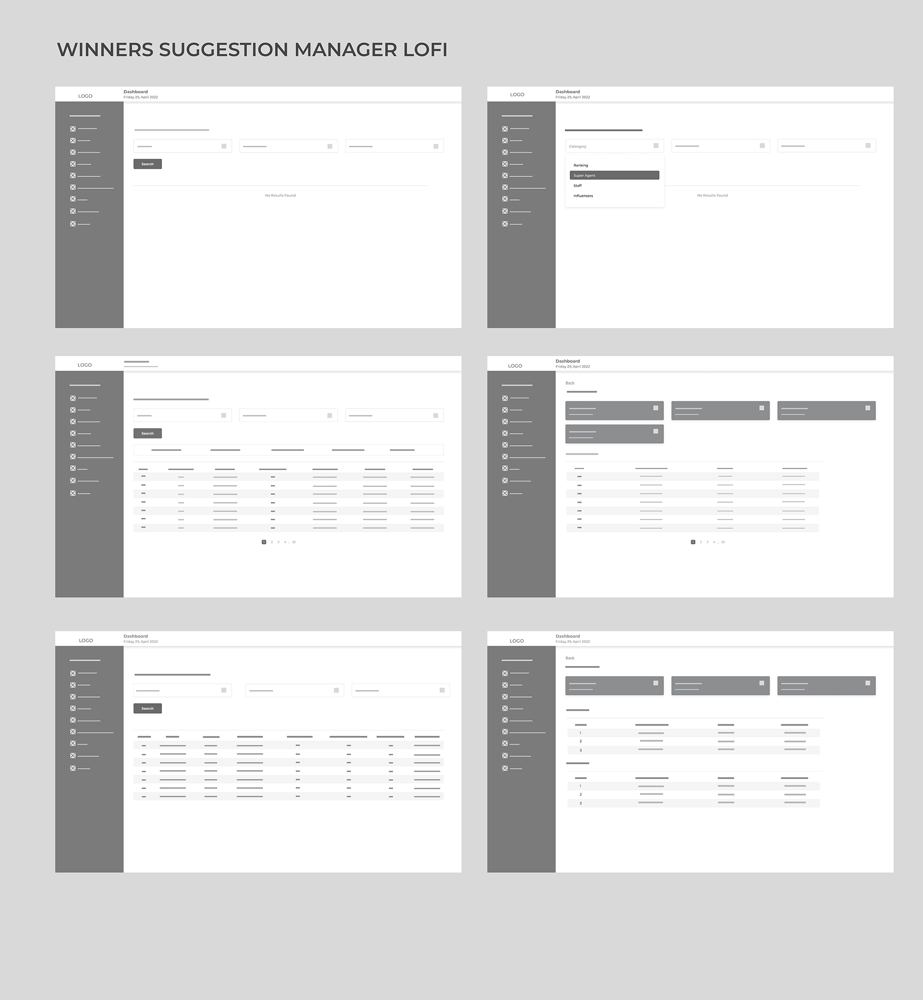
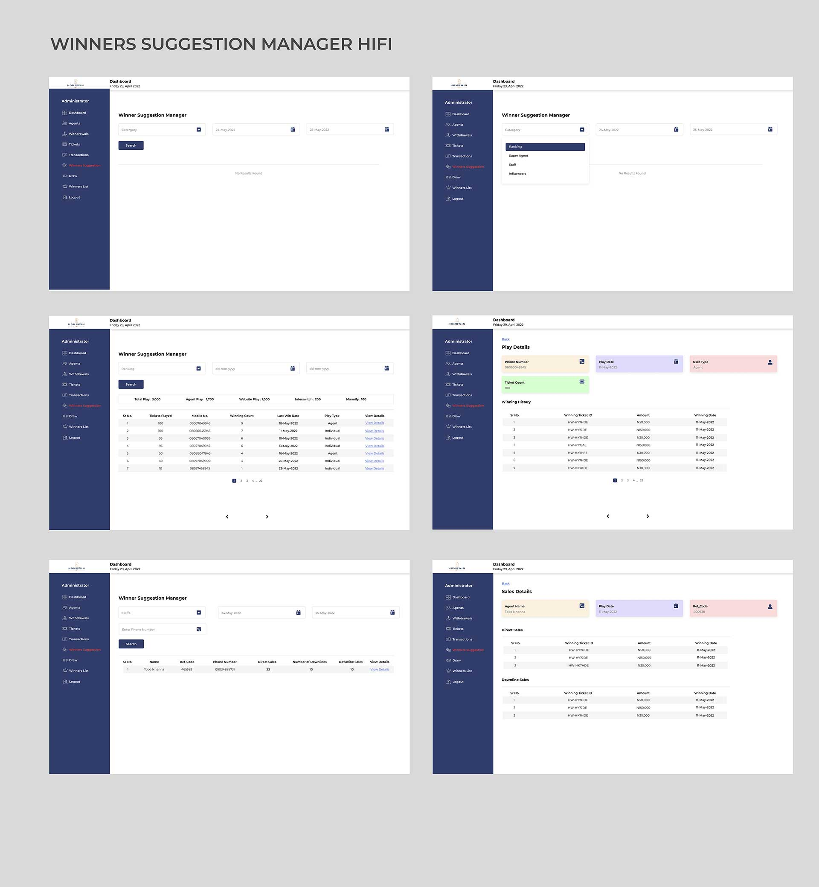

This is a feature that is designed to ease the selection system of winners which was originally done querying the database manually.
I conducted a research through an interview with the developer in charge of the manual querying of the database, to understand what criteria they use in determining the winners, and the play channels. With these, I was able to understand the problem and ideate on the possible solution. The feature was tested cross users, adopting the unmoderated usability study approach. This was done with the prototyped high fidelity of the application and feedbacks were accessed to understand the themes and patterns across these users grouping them with the help of an affinity diagram after which we iterated. This research was to figure out the following:
To make it easy for administrators to pick winners for draws based on selected criteria.
To ease the developers the stress of manually picking winners from database.
This research gave a proper insight with the necessary
information needed to produce wireframes, low-fi mockups to get
feedback very early in the design phase. The insights, interviews, and
solutions are included in this study.
During the research stage, I was able to get the user categories.
The roles and privileges were also identified. This helped me
profile the user appropriately based on assigned duties.
Administrator
I was able to identify and address different concerns across the application user categories. This step not only gave the design phase a clear direction on how to implement design solutions, but also helped the development team to develop user stories.

These early-stage wireframes pointed the team in the right direction. We got early feedback by conducting a usability test on the wireframes. We used the information from the testing to develop user flows for different categories of users.
Some of the feedback I got from testing the wireframes were very useful to the team. I have highlighted it below.
The feedback helped us develop the user flow for various categories of users.

The newly designed feature will reduce the amount of time spent on drawing winners as it replaces the manual way it has been done. Saved the organization N3million (naira) since this feature could be used by anyone who is not tech-savvy.

As at the time of documenting this writeup, The new feature is in
the deployment phase. All design iterations and
improvement were done and handed over to the development team
successfully.
The new feature introduced now makes it easy for anyone to pick suggested winners
The feature was also introduced to hasten the draw process which was achieved.
Overall, I am excited to work on a project that’ll help non-tech users get suggested winners from database which was initial done by a skilled developer. This improve the way they do draws with ease. Engaging stakeholders at the beginning of every design phase is important. User testing and feedback can help designers make informed decisions on various design propositions